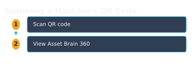
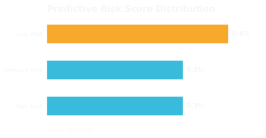

WorkHive Learn · Philippines
Equipment History in One QR Scan: Asset Brain 360
Who this is for
- Field technicians responsible for performing routine maintenance and repairs
- Supervisors overseeing maintenance teams and ensuring plant operations run smoothly
- Reliability engineers tasked with analyzing equipment performance and implementing improvements
- Plant managers responsible for overall plant performance and productivity
- OFW-track engineers who need to access equipment history and performance data remotely
- Maintenance planners coordinating work orders and resource allocation
What's in this guide
Introduction to Asset Brain 360
Asset Brain 360 is a powerful feature in WorkHive's Asset Hub, designed to provide a comprehensive history of every machine in your plant. By simply scanning a QR or barcode on a machine, you can access its full timeline, including logbook entries, preventive maintenance history, inventory and parts movements, and project work. This centralized view enables you to decide with evidence about machine maintenance and repair.
For example, consider a pump in a bottling line at a plant in Cabuyao, Calabarzon. With Asset Brain 360, you can scan the QR code on pump P-204B and instantly view its entire history, including any downtime in PHP. A breadcrumb above the asset shows its parent in the hierarchy, so you can see what the pump belongs to without leaving the page, and a Recommended Parts to Stage card appears when the model has enough history to predict what this machine will need next. The hierarchy itself follows ISO 14224 asset and failure coding.
Asset Brain 360 also carries a live asset state, a per-asset Risk Profile, and Ask Asset Brain — a question box answered only from that machine's own records. The fleet-wide view of the same scores lives on a different page: Predictive Maintenance is where the Risk Ranking and the Health Heatmap rank every asset against the others. Asset Hub answers “how is this machine?”; Predictive Maintenance answers “which machine first?” With Asset Hub, you can start building your asset brain with a simple, zero-budget approach: label machines with printed QR codes, start logging, and let the brain assemble the history.
Scanning a Machine's QR Code
As a plant supervisor in a Philippine facility, you're likely familiar with the challenges of tracking machine history. With Asset Hub's Asset Brain 360, you can access a machine's full history in one QR scan. This feature is part of WorkHive's Asset Hub, a tool designed to help you manage your assets efficiently.
To scan a machine's QR code, simply navigate to the Asset Hub page and click the Scan button. This will open your device's camera, allowing you to scan the QR code label on the machine. Make sure the tag is printed and affixed to the machine. The scanner reads QR codes and ordinary barcodes alike (Code 128, EAN-13, Code 39), and if the camera is refused or the decoder will not load, the scanner stays open with manual entry so you can type the tag instead: the one path that still works in a plant with no signal.
- Navigate to the Asset Hub page in WorkHive.
- Click the Scan button to open your device's camera.
- Scan the QR code label on the machine, such as one for a Cabuyao bottling-line pump P-204B.
- The Asset Brain 360 page will load, displaying the machine's full history, including logbook entries, PM history, inventory and parts movements, and project work.
- If the tag is not in your register yet, the scan does not fail silently: it drops what it read into the search box so you can see exactly what was on the label.

The Full Per-Asset Timeline
Asset Brain 360 in WorkHive Asset Hub brings together a machine's entire history in one easily accessible timeline. After scanning a QR code on a machine, technicians can view logbook entries, PM history, inventory and parts movements, and project work all in one chronological record. This comprehensive view allows for a deeper understanding of the asset's performance over time.
Around that timeline the page adds the parent breadcrumb, a Risk Profile for this asset alone, and Ask Asset Brain, which answers questions using only this machine's own records. Below them sits the part most readers never find: the Reliability Workbench, five tabs of standards-anchored analysis on the same asset: an FMEA matrix (AIAG-VDA 2019), RCM strategy (SAE JA1011 / JA1012), a Weibull fit (IEC 61649), P-F intervals (ISO 13381-1), and the last 365 days of corrective history. The hierarchy underneath it all is ISO 14224 asset and failure coding.
Machine Relationships and Parts Information
In Asset Hub, when you scan a machine's QR code, Asset Brain 360 opens, showing not just the asset's timeline but also its relationships with other machines. For example, consider Pump P-204B in a Cabuyao bottling line. A breadcrumb above its name shows the parent it belongs to: the line, the skid, the system, so a technician can place the pump in the hierarchy at a glance. The chain is one hop today; deeper traversal is still being built.
Parts appear on the page in two ways, and it is worth knowing which is which. Every part ever issued against this machine is already in the timeline, as inventory movements you can read back. Separately, a Recommended Parts to Stage card appears when the model has enough history to predict what this asset will need: a pre-staging suggestion with a confidence chip attached, which you accept or ignore. The first is a record of what was used; the second is a forecast of what to have ready.
Read together, the parent chain and the parts record answer a question a single work order never can: whether this machine keeps failing on its own, or keeps failing because of what it is attached to. This feature, available in Asset Hub, supports more efficient maintenance and repair processes, ultimately contributing to increased equipment reliability and reduced downtime.
The Risk Profile, and Where the Heatmap Lives
The Risk Profile card on an asset's own page gives it a band: critical, high, medium or low: computed from the maintenance history your team logged against it. Scores are recomputed daily at 13:00 PHT by a batch job, so the number you see is yesterday's evidence, not a live reading. If a pump like P-204B is too new, or the engine has not run yet, the card says so plainly rather than inventing a score.
The Health Heatmap and the Risk Ranking are a different surface, and looking for them on the asset page is the commonest way to get lost here. They live on Predictive Maintenance, which scores 0 to 100 and ranks every asset in the hive against every other, alongside a failure-trend forecast. The rules engine runs from day one; a GBM model takes over once the hive has logged 500 or more corrective records, and until then the page suppresses predictions rather than guessing. Scan a tag to ask “how is this machine?”; open Predictive Maintenance to ask “which machine do I touch first?”
| Risk Level | Description |
|---|---|
| Critical | Act now: this is the asset the shift plan should open with |
| High | Immediate attention required to prevent failure |
| Medium | Monitor asset closely, schedule maintenance |
| Low | Asset operating within normal parameters |

Worked Example: Cabuyao Bottling-Line Pump P-204B
Let's consider a real-life example of using Asset Brain 360 in WorkHive Asset Hub. A plant supervisor in Cabuyao, Calabarzon, wants to check the history of a bottling-line pump, P-204B. After scanning the QR code on the pump, the supervisor opens the Asset Brain 360 page in Asset Hub.
The page shows a full timeline of the pump's history, including logbook entries, preventive maintenance records, inventory and parts movements, and project work. The parent breadcrumb places the pump in the line it belongs to, and if the model has enough history a Recommended Parts to Stage card suggests what to have ready. Ask Asset Brain answers questions from this pump's records and no one else's.
The page also shows the live asset state and this pump's own Risk Profile band, which is what the reliability engineer needs when the question is about P-204B. When the question becomes which of forty assets to schedule first, that ranking is on Predictive Maintenance, not here.
Open the tool: Asset Hub is the WorkHive surface this guide funnels into. It is free at the worker tier, works offline, and is built for Philippine plants.
Open Asset Hub →Frequently asked questions
What is Asset Brain 360?
How do I access Asset Brain 360?
What kind of information is available in Asset Brain 360?
Can I use Asset Brain 360 for machines that are not in our current asset register?
Is Asset Brain 360 available for all types of machines?
Can I customize the information displayed in Asset Brain 360?
Sources
- ISO 14224:2016 - Petroleum, petrochemical and natural gas industries - Reliability, availability and maintainability (RAM) data exchange
- SMRP CMRP Body of Knowledge
- DOLE OSHS - Occupational Safety and Health Standards
- Related WorkHive guides: Building an asset register from scratch · Predictive maintenance on a budget · FMEA worked example